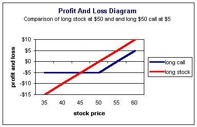
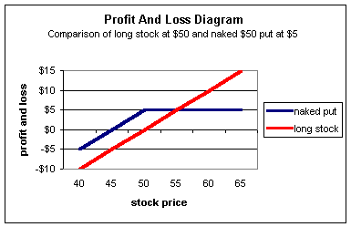
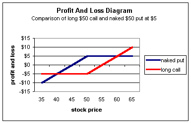

You've probably heard many opinions as to which option strategies are the best: Covered calls are best because they reduce the risk but still allow for a profit. Naked puts are the best because you're getting paid to buy stock. Straddles are the best because they allow you to make money whether the market is going up or down.
If you've been trading options for a while, you no doubt have heard many others. But, when you hear comments such as these, all you're hearing are opinions of one trader's preference for a particular risk-reward profile. In order to really understand option trading, you need to understand that all option strategies come with their own sets of risks and rewards and the market will price them accordingly. Be careful of anyone telling you that a particular strategy is superior to another; they either do not fully understand options or are trying to sell you something.
Traders who tout superior option strategies focus on one aspect of the strategy -- either the risk or reward side -- and completely neglect the counterpart. They will make comments such as, "Calls are superior to stock because the return on investment is much higher." It's easy to make them consider the risk side by replying, "Sure, but lottery tickets are superior to calls because the return on investment is even higher!"
The best option strategy is the one that directly matches your set of risk and reward tolerances for a given outlook on the underlying. This is the level of option trading you want to achieve. Learn to dissect a position into its component parts and see if you are willing to accept the associated risks. Learn the various strategies and how to further tailor them to match your needs better. Don't spend your time looking for the superior option strategy. It doesn't exist.
To fully understand the relationships between risk and reward with options, we need to look at profit and loss diagrams. (Please see our section next week on "profit and loss diagrams" if you are not familiar with them. We will show you in detail how to construct and read them next week.)
If you compare the profit and loss diagrams of any two strategies, there will always be a part of the diagram where each strategy dominates.
For example, let's revisit the earlier comment. Are call options superior to stock? Assume one investor buys stock for $50 and another buys the $50 call for $5.
We can plot the profit and loss at expiration for each position, and we will get the following diagram:
For example, the trader who buys stock at $50 will make $5 profit if the stock is trading for $55. If you look at the above chart, you can see that the profit and loss line (red) crosses the $5 profit line for a stock price of $55. Likewise, if the stock is trading for $45, the trader will incur a $5 loss.
The diagram also shows that the long $50 call buyer (blue) will lose $5 if the stock is $50 or below and will break even if the stock is $55. At a stock price of $60, the $50 call buyer will make $5 profit (the call option will be worth $10 but the trader paid $5)
Notice the profit and loss diagram for stock (red). It is superior to (lies above) the profit and loss line for the long call (blue) for all stock prices above $45. This is because the call option buyer is effectively paying $55 for the stock ($50 strike for a cost of $5). If the stock stays above $45, the long stock position is the better strategy (the red line is above the blue line). But if the stock falls below $45, the call option becomes the better strategy (the blue line is above the red line), as the most the long call will lose is the premium. It should be evident that one strategy is not better than the other; it depends on your outlook of the stock and the amount of risk you are willing to accept.
An investor who believes the stock will stay above $50 is better off buying stock. Of course, there is a tradeoff of accepting a potential $50 maximum loss. Conversely, an investor who believes the stock is heading higher but doesn't want the exposure to the downside is better off buying the call. The tradeoff is that he will pay $55 for the stock instead of $50, but in return, only be subjected to a $5 maximum loss.
If traders are more concerned with the downside risk, they will bid up the price of the call. If they feel the price of the call is too high relative to the stock, they will sell the call (either naked or covered). These actions will price the call fairly with respect to investors' opinions, and neither strategy will be superior to the other.
What about naked puts? They must be better than stock because you are actually getting paid to buy the stock, right?
Let's look at the profit and loss diagram between stock purchased for $50 and a naked $50 put sold for $5:
Again, in some areas of the chart the long stock position dominates, and in others it does not. The long stock position is better for stock prices above $55. With the stock above $55, the long stock investor will realize unlimited profits, while the naked put will profit only by the premium received from the sale of the put.
However, if the stock is below $55, the naked put is the better strategy. Below a $50 stock price, both investors lose but the naked put seller is ahead by the premium.
Maybe a long call is better than a naked put? Some may reason that the long call position makes more money than the short put if the stock rises and loses less if it falls, so it is a better strategy. Let's assume a long $50 call and short $50 put are each traded for $5:
Looking at the above chart we see that the long call position (red) does dominate for all stock prices above $60 and below $40. But if the stock stays between these prices, the naked put is clearly the better choice. Your outlook on the stock and tolerance for risk will determine which strategy is best for you.
Pick any two strategies and look at their profit and loss diagrams. You will always see that each strategy will dominate over a given range of stock prices. Try switching one position from long to short. Try changing strike prices. You will soon see that it does not matter; one strategy cannot dominate another for all stock prices.
Strategies come in all shapes and sizes. Now you should have a better understanding why. Different strategies alter the risk-reward relationships and it is up to you, the trader, to decide which is best. Do not be afraid to alter the strategy to meet your taste -- that is what option trading is all about. If you accept somebody's strategy as the "best," you are, by default, accepting his or her risk tolerances too. If those tolerances are not in line with yours, you will eventually learn, the expensive way, that no strategy is superior to another.